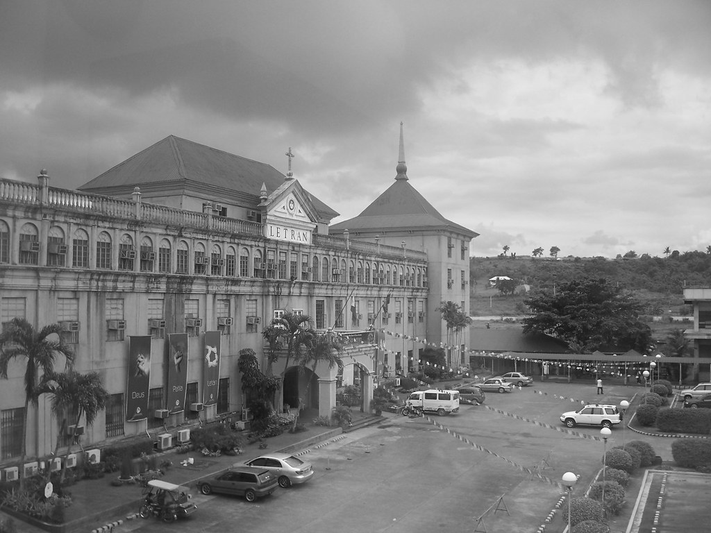

KNOW US MORE
About
Colegio de San Juan de Letran Calamba was established on March 11, 1979 in Barangay Bucal, Calamba City, Laguna, in an 11-ha rolling site at the foot of Mt. Makiling. On August 7, 1986, Letran Calamba was granted autonomy by its mother institution (Letran Intramuros) with Rev. Fr. Tamerlane Lana, O.P. as its first Rector and President.
Misson
We, the Colegio de San Juan de Letran Calamba, a Catholic educational institution, commit ourselves to the total human development, and better quality of life of our students, faculty, and employees, and the promotion ofb genuine community through an education that is Filipino, Dominican, and Christian in orientation.
Vision
In a Culture of Conscience, Discipline, and Excellence, we envision Letran Calamba as a University, a center of Science and technology, as well as a vital formation center in the religious and socio-economic development of the region.
Our History
Colegio de San Juan de Letran Calamba was once described as a fusion between "tradition and vision". Let this host of stories unfold as a testimony to that contradictory blend.
The Colegio's Historical Records
Its story started in March 1979 when it was founded by its mother-institution, Letran Intramuros. It is the first institution of higher learning established by the Dominican Province of the Philippines; the rest having been put up by the Spanish Dominicans.
The idea of putting up a Dominican school in Laguna was triggered by the move to decentralize DPPI schools in Manila. Further, a close consideration was also that of bringing Letran to another home place of a hero - our national icon: Dr. Jose Rizal.
Letran Manila was touted as the alma mater of our great heroes such as Manuel Quezon, Sergio Osmeña, Apolinarion Mabini, Gregorio del Pilar, Fransisco Balagtas, and Emilio Aguinaldo. From 1979, Letran Calamba has established a good name in quality education, strong research efforts, and responsive community service and extension activities. Hence, in 1986, it was granted autonomy by Letran Manila. It has since become a respected higher educational institution. It operates within the principles of Filipino, Dominican, and Christian education - within the contexts of excellence, conscience, and discipline. Its curricular programs range from its flagship engineering courses to specialized offerings on information technology, business management, hospitality management, education, arts and sciences, nursing, and professional studies.
THE HERE AND NOW
For the last decades, the Colegio can boast of accomplishments in quality learning and instruction, infrastructure development, research undertakings, and community service. The institution has a pool of more than 250 qualified mentors, most of them equipped with graduate degrees. Engineering and communication students manage the institution's own radio station, Knight 103.9 FM. Hotel and Restaurant Management students operate fully equipped mini-hotel in the campus. Computer Science and Information Technology majors, on the other hand, enjoys the use of the Information Technology and Computer Center, a facility provided with 700 top-of-the-line computer units. Research efforts were rewarded with CHED Region IV's award for the best HEI Student Research Program given January 2007. Community Service is felt through the tradition and advocacy of Makipamuhay, a social immersion program being sustained by the Colegio for years. It has also put up Hayuma an internationally-funded project where skilled workers from Laguna communities are working.
OUR ROUTES
All these and more triggered the Colegio to venture into accreditation and certification efforts. These are moves to further substantiate the institution's adherence to quality standards. This is another part of our institution's grand narrative.
The Colegio has pursued various quality management efforts reflecting the institution's drive towards management of quality assurance. Letran Calamba has started its application for Philippine Association of Colleges and Universities Commission on Accreditation (PACUCOA) accreditation in November 2008. The Federation of Accrediting Association of the Philippines (FAAP) awarded to 50% of the Colegio's program LEVEL I Formal Status and 18.18% of the programs with Level II First Reaccredited Status. The Colegio was also awarded with the highest number of candidate programs in the Philippines for two consecutive years (2011 and 2012). In addition, the Colegio has been awarded as the institution with the highest number of Level 1 accredited programs in the Philippines during the 25th PACUCOA General Assembly.
Also, the Colegio was granted the ISO 9001:2008 certification on November 28, 2013. The Colegio's pursuit of quality management continues with its recent engagement with a national quality award. The quality management efforts of the Colegio prove the contention that quality is a continuous and rigorous pursuit which is worth doing well.